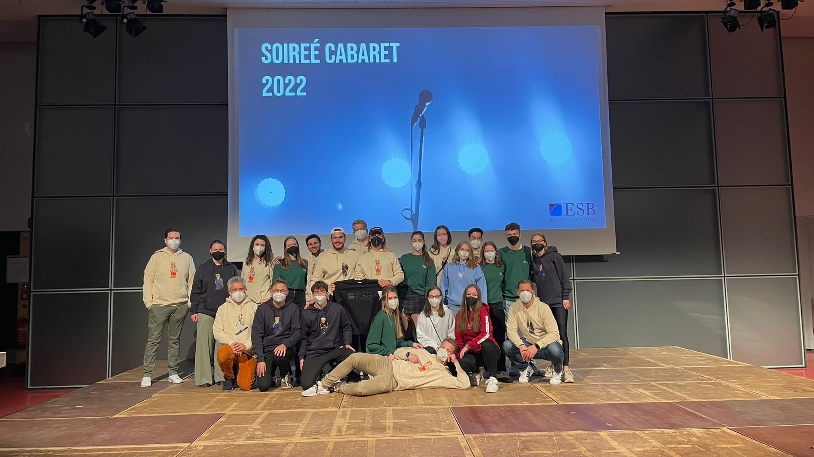
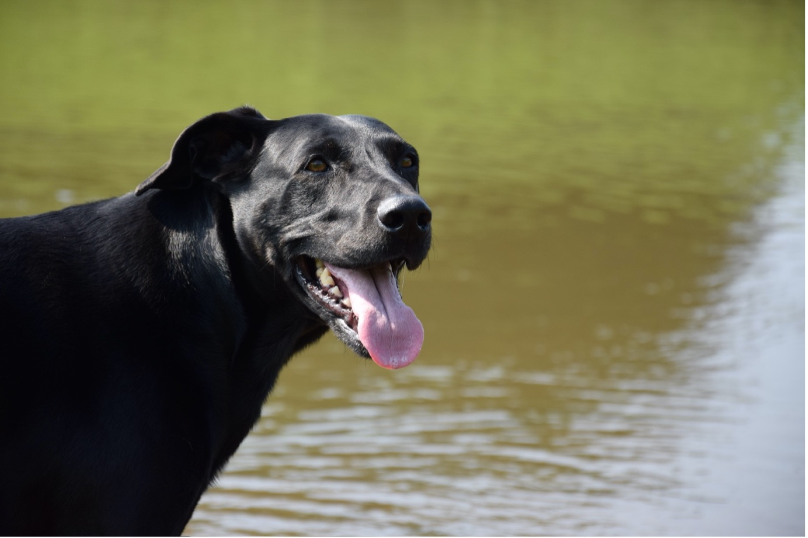

Email: lasse.willen@web.de
LinkedIn: linkedin.com/in/lasse-willen
GitHub: github.com/LasseWillen
Phone: +4915227539893
Location: Germany, Baden Württemberg, Biberach
In addition to my work and studies, I prioritize engaging with communities I am a part of and contributing to good causes. As a student, I believe that study programs greatly benefit from the involvement of their members. Therefore, while studying at ESB Reutlingen, I participated in building and facilitating the new Merchandise Resort. At the resort, we created and sold ESB Reutlingen merchandise, with all profits going to charity, specifically the “Förderverein für krebskranke Kinder Tübingen e.V.”, a program that supports children with cancer. This endeavor was successful, as we generated over €2,500 in revenue within two months.
Moreover, I served as the president of the Global Business Society at Dublin City University, leading the society and its committee. I also organized national and international events for the society. This position was highly valuable as it improved my organizational and leadership skills.
Politics is an area of great interest to me. I volunteered as a deputy election officer for the city of Reutlingen, supporting both state and federal elections. This experience was particularly valuable as it allowed me to work alongside many engaged members of the Reutlingen community and engage in interesting conversations, showcasing different views on topics from a diverse range of people.
Beyond my work and studies, I am practicing hobbies that bring me closer to nature and my community, reflecting my appreciation for health and engagement. Sports, particularly tennis, play a big part in my life. I've taken the lead as both captain and coach for the TV Biberach-Hühnerfeld tennis teams during summer camps, embracing the thrill of the game and the joy of teaching others. Calisthenics has also been a key part of my daily life lately, underscoring my belief in the power of physical fitness to enhance overall well-being.
Photography offers me a peaceful escape into the natural world, where I like to spend my time capturing wildlife and beautiful landscapes. This is a great way for me to create lasting memories. But nothing beats the time I spend with my two dogs, who've been my companions since childhood. They're not only a source of joy but also the perfect subjects for my photography.
My involvement in community and leadership activities, like the Merchandise Resort initiative at ESB Reutlingen and my role in the Global Business Society at Dublin City University, mirrors the values I hold dear through my hobbies. These aspects fuel my personal growth and my aspiration to positively influence the world around me.
